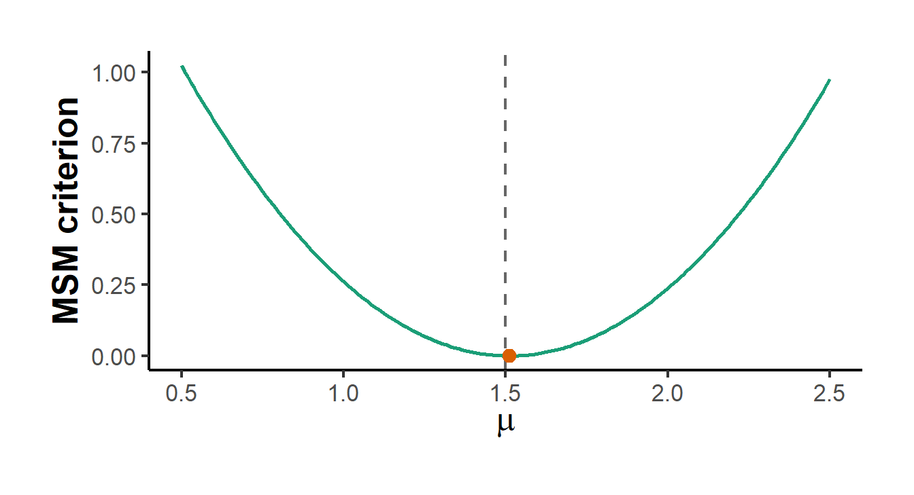
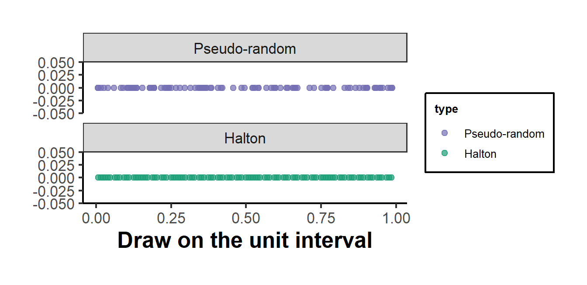

Chapter 59 Estimation Methods for Structural Models
This chapter opens a short cluster of structural econometrics. The chapters that follow specialize the machinery to particular settings: discrete-choice demand and the BLP model for differentiated products, dynamic discrete choice, dynamic games, and structural models of selection. The role of this chapter is to set out the common foundation they all draw on, namely what a structural model is, why an analyst would want one, and the estimation toolkit that turns an economic model into parameter estimates. The companion chapters can then concentrate on the economics specific to each problem rather than rederiving the estimator each time.
The thread running through the cluster is that an explicit economic model, taken seriously as a set of restrictions on the data-generating process, lets the analyst answer counterfactual questions that no purely descriptive regression can (Reiss 2011). The cost is that the model must be estimated, and the objects it implies (choice probabilities, equilibrium prices, value functions) are often integrals with no closed form. Much of the apparatus below exists to handle exactly that difficulty.
59.1 What Structural Estimation Is, and Why
A reduced-form analysis asks how an outcome moves with a covariate, holding the rest of the world fixed in a statistical sense. The target is a treatment effect or an elasticity, and the credibility of the answer rests on a research design: a randomized experiment, or a quasi-experiment that mimics one. A structural analysis instead posits a model of optimizing agents, consumers maximizing utility and firms maximizing profit, and estimates the parameters of that model directly. Those parameters are the deep primitives of the economic environment, preferences, technologies, costs, and information, that are assumed to be stable across the policy regimes the analyst wants to compare.
The reason to pay this price is the counterfactual. Once the primitives are in hand, the analyst can simulate outcomes under regimes that were never observed: a merger between two firms, the removal of a product, a new tax, or a change in market structure. A reduced-form elasticity estimated under the current regime carries no guarantee that it survives the policy change, because the change may itself alter the behavior that produced the elasticity. This is the Lucas critique in its empirical form, and it is the core argument for recovering primitives rather than reduced-form coefficients (Reiss 2011).
The trade-off between the two approaches is sharp. Reduced-form work buys credibility by leaning on a design and refusing to extrapolate beyond it. Structural work buys generality by committing to a model, and accepts that misspecification of preferences or of firm conduct contaminates every counterfactual built on top of it. Neither approach dominates. The most persuasive modern empirical work tries to get the best of both, estimating a flexible structural model while disciplining its parameters with credible exogenous variation, typically instrumental variables constructed from cost shifters or competitor characteristics. Keeping that tension in view is the right posture for everything in this cluster: a structural estimate is only as good as the model and the identifying variation behind it.
The mechanics of structural estimation reduce, in almost every case, to one of two principles. Either the model implies a set of moment conditions that the true parameter must satisfy, leading to the generalized method of moments, or it implies a likelihood for the observed data, leading to maximum likelihood. The simulation methods in the second half of the chapter are not a third principle but a way to implement the first two when the moments or the likelihood involve integrals that cannot be evaluated in closed form.
59.2 Generalized Method of Moments
The generalized method of moments (GMM) is the workhorse of structural estimation (Hansen 1982). Its appeal is that it requires only a set of moment conditions, population statements of the form
\[ \mathbb{E}\!\left[\, g(w_i, \theta_0) \,\right] = 0, \]
where \(w_i\) collects the data for observation \(i\), \(\theta_0\) is the true parameter vector, and \(g\) is a known vector-valued function implied by economic theory. The model need not deliver a full likelihood, only these restrictions. In a demand model the moment might be that an instrument is uncorrelated with the structural error; in a dynamic model it might be an Euler equation stating that a marginal-utility ratio equals a discounted return.
Given a sample, GMM replaces the population expectation with its sample analogue,
\[ \bar{g}(\theta) = \frac{1}{n} \sum_{i=1}^{n} g(w_i, \theta), \]
and chooses \(\theta\) to make this vector as close to zero as possible. When there are exactly as many moments as parameters, the model is just-identified and one can usually set \(\bar{g}(\theta) = 0\) exactly. When there are more moments than parameters, the model is overidentified and the moments cannot all be set to zero at once. The estimator then minimizes a weighted quadratic form,
\[ \hat{\theta} = \arg\min_{\theta} \; \bar{g}(\theta)' \, W \, \bar{g}(\theta), \]
where \(W\) is a positive-definite weighting matrix that decides how much each moment, and each linear combination of moments, counts.
The choice of \(W\) matters for efficiency, not for consistency. Hansen showed that the asymptotically efficient choice sets \(W\) proportional to the inverse of the variance of the moment conditions, so that noisy moments receive less weight (Hansen 1982). In practice this is implemented in two steps. A first stage minimizes the criterion with a simple weight, often the identity matrix, to obtain a consistent but inefficient \(\hat{\theta}\). That estimate is used to form an estimate of the moment covariance matrix, whose inverse becomes the weight in a second, efficient stage. Iterating the two steps to convergence, or minimizing over \(\theta\) and \(W\) jointly through the continuously updated estimator, are common refinements (Newey and McFadden 1994).
Overidentification is not merely a nuisance to be weighted away. The extra moments are testable restrictions. Under correct specification the minimized criterion, scaled by the sample size, is asymptotically chi-squared with degrees of freedom equal to the number of overidentifying restrictions. This is Hansen’s \(J\) test, and a large value is evidence that the model and the data disagree. A structural model that comfortably passes its overidentification test is more believable than one estimated from exactly as many moments as parameters, where no such check is possible.
59.3 Maximum Likelihood
When the structural model delivers a complete probability statement about the observed data, maximum likelihood (MLE) is the natural estimator. The model specifies a density \(f(w_i \mid \theta)\) for each observation, and the estimator maximizes the log-likelihood of the sample,
\[ \hat{\theta} = \arg\max_{\theta} \; \sum_{i=1}^{n} \log f(w_i \mid \theta). \]
The general theory of likelihood, the score, the information matrix, and the Cramér-Rao bound, is developed in the chapter on likelihood and theories of inference; here the concern is what the likelihood looks like for a structural model. The recurring difficulty is that the density of the observed outcome is itself an integral over unobserved heterogeneity or over unobserved states. In a random-coefficients discrete-choice model, for instance, the probability that consumer \(i\) picks product \(j\) is the integral of a logit choice probability over the distribution of that consumer’s tastes,
\[ P_{ij}(\theta) = \int \frac{\exp(x_{ij}'\beta)}{\sum_{k} \exp(x_{ik}'\beta)} \; \mathrm{d}F(\beta \mid \theta). \]
When the tastes \(\beta\) are common across people, the integral collapses and the likelihood is the familiar multinomial logit. When tastes vary, the integral has no closed form for any distribution richer than a few special cases, and the likelihood cannot be written down explicitly. Either it must be approximated by numerical integration, or it must be simulated. That observation is the bridge to the rest of the chapter.
When the likelihood is correctly specified and tractable, MLE is asymptotically efficient, attaining the Cramér-Rao lower bound, which is its advantage over GMM. The cost is that MLE commits to the full distribution of the data, so a misspecified density can bias every estimate, whereas GMM commits only to a handful of moments and is correspondingly more robust. The choice between them is the same credibility-versus-efficiency tension that runs through the whole subject.
59.4 Simulation-Based Estimation
The integrals in the previous section are the reason simulation entered structural econometrics. The idea is disarmingly simple. An integral is an expectation, and an expectation can be approximated by an average over draws. If the choice probability is
\[ P_{ij}(\theta) = \int p_{ij}(\beta) \, \mathrm{d}F(\beta \mid \theta), \]
then drawing \(R\) values \(\beta^{(1)}, \dots, \beta^{(R)}\) from \(F(\cdot \mid \theta)\) and averaging,
\[ \widehat{P}_{ij}(\theta) = \frac{1}{R} \sum_{r=1}^{R} p_{ij}\!\left(\beta^{(r)}\right), \]
gives a simulator that converges to the true probability as \(R\) grows. Substituting this simulator wherever the intractable integral appears yields a family of feasible estimators.
There are three canonical members of the family, distinguished by which exact-data object they simulate.
The method of simulated moments (MSM) replaces the moment conditions of GMM with simulated counterparts and minimizes the same quadratic criterion (McFadden 1989; Pakes and Pollard 1989). Its central virtue is that the simulation error can be made to enter the moments additively and to average out across observations, so that MSM is consistent even with a small and fixed number of draws per observation. McFadden and, independently, Pakes and Pollard established this property, which is what made the approach practical when computing was scarce.
The method of simulated maximum likelihood (MSL), also called maximum simulated likelihood, replaces the likelihood contribution of each observation with a simulated probability and maximizes the resulting simulated log-likelihood (Train 2009). Because the logarithm is a nonlinear function of the simulated probability, the simulation introduces a bias of order \(1/R\) into the log-likelihood. MSL is therefore consistent only as both the sample size and the number of draws grow, which is its main disadvantage relative to MSM, traded against the efficiency of a likelihood-based estimator when the model is correct.
The method of simulated scores (MSS) simulates the score, the gradient of the log-likelihood, rather than the likelihood itself. When the score can be simulated without bias, MSS recovers the consistency-with-fixed-draws property of MSM while retaining the efficiency of a score-based estimator, at the cost of a more delicate simulator (Train 2009).
Two practical points govern all three. First, the same draws should be held fixed across evaluations of the criterion as the optimizer searches over \(\theta\). Redrawing at every function evaluation injects noise that prevents the optimizer from converging and makes the simulated criterion non-smooth in the parameters. Second, simulation error shrinks like \(1/\sqrt{R}\) for an unbiased simulator, so halving the simulation standard deviation requires quadrupling the draws. The number of draws is therefore a genuine tuning decision, balancing statistical noise against computation, and it is the subject the next section addresses by making the draws themselves more efficient.
59.5 Simulation and Integration Tools
The estimators above are only as good as the integration that underlies them. This section collects the numerical tools that make simulation-based estimation reliable: smarter ways to draw, an alternative to drawing entirely, and the optimization that wraps around the whole criterion.
59.5.1 Monte Carlo and Quasi-Random Draws
Ordinary Monte Carlo integration draws pseudo-random points and averages. It is unbiased and its error falls like \(R^{-1/2}\) regardless of the dimension of the integral, which is why it scales to the high-dimensional integrals of structural models. Its weakness is that independent random points cluster and leave gaps purely by chance, so a given number of draws covers the integration region unevenly.
Quasi-random, or low-discrepancy, sequences are designed to fix exactly that. Rather than independent draws, they place points to fill the space as evenly as possible. The Halton sequence builds each coordinate from the radical-inverse function in a distinct prime base, and the Sobol sequence uses a more elaborate construction with better behavior in higher dimensions. For smooth integrands a quasi-Monte Carlo average can achieve an error closer to \(R^{-1}\) than to \(R^{-1/2}\), so that far fewer draws are needed for a target accuracy (Train 2009). In simulated-likelihood estimation of mixed logit, a few hundred Halton draws routinely deliver the accuracy that would require thousands of pseudo-random draws. Figure 59.2 shows the difference in coverage directly.
59.5.2 Quadrature
When the integral is low-dimensional and the integrand is smooth, deterministic numerical integration can beat simulation outright. Gauss-Hermite quadrature approximates an integral against a normal density by a weighted sum at a small set of carefully chosen nodes,
\[ \int g(\beta) \, \phi(\beta) \, \mathrm{d}\beta \;\approx\; \sum_{m=1}^{M} \omega_m \, g(\beta_m), \]
where the nodes \(\beta_m\) and weights \(\omega_m\) are fixed by the rule. A handful of nodes integrate a smooth function against a Gaussian almost exactly, which is far cheaper than simulation for a one-dimensional random coefficient. The limitation is dimensionality. A product rule across \(d\) dimensions needs \(M^d\) nodes, so quadrature is the tool of choice for one or two random coefficients and gives way to quasi-Monte Carlo once the integral runs to many dimensions.
59.5.3 Numerical Optimization, Identification, and Starting Values
Every estimator in this chapter is the solution of an optimization problem, and structural criteria are rarely solvable in closed form. Two families of optimizer dominate. The Nelder-Mead simplex method uses only function values and so tolerates a criterion that is non-smooth or whose gradient is unavailable, at the cost of slow convergence. Quasi-Newton methods such as BFGS build up an approximation to the curvature from gradients and converge quickly near the optimum, but they assume the criterion is smooth, which is one more reason to hold the simulation draws fixed so that the simulated criterion is differentiable in the parameters.
Two issues sit underneath the optimization. The first is identification. The optimizer can only recover a parameter that the model and the data jointly pin down; a flat direction in the criterion signals a parameter the data cannot separate, and no amount of computation will rescue it. Checking that the criterion is curved in every direction at the optimum, by inspecting the Hessian or the information matrix, is part of taking a structural estimate seriously. The second is starting values. Structural criteria are frequently multimodal, so a local optimizer can converge to a parameter vector that is merely a local optimum. The standard defenses are to start the optimizer from many dispersed initial points and keep the best solution, and to begin from a simpler model whose estimates are known to be reasonable, for instance a plain logit before a mixed logit. The worked examples below adopt both habits in miniature.
59.6 A Method of Simulated Moments Example
The first example estimates a single parameter by matching a simulated moment to a data moment, which is the method of simulated moments stripped to its essentials. The data-generating process is deliberately simple so that the logic is visible. Each observation is the larger of two independent draws, \(y_i = \max(u_{i1}, u_{i2})\), where the \(u\) are normal with unknown mean \(\mu\) and known unit variance. The mean of \(y\) is a known increasing function of \(\mu\), but rather than derive it we simulate it, which is exactly what one does when no closed form exists. The estimator chooses \(\mu\) so that the simulated mean of \(y\) matches the sample mean. Figure 59.1 plots the resulting simulated criterion, minimized at the estimate.
library(ggplot2)
set.seed(46)
# True data-generating process: y = max of two N(mu, 1) draws
mu_true <- 1.5
n_obs <- 2000
y_data <- pmax(rnorm(n_obs, mu_true, 1), rnorm(n_obs, mu_true, 1))
m_data <- mean(y_data) # the data moment to match
# Simulator for the model moment at a candidate mu, with fixed draws
R <- 4000
e1 <- rnorm(R) # held fixed across evaluations of mu
e2 <- rnorm(R)
sim_moment <- function(mu) mean(pmax(mu + e1, mu + e2))
# MSM criterion: squared distance between data and simulated moment
msm_obj <- function(mu) (m_data - sim_moment(mu))^2
# Minimize the criterion over the single parameter
fit <- optimize(msm_obj, interval = c(-2, 5))
mu_hat <- fit$minimum
grid <- seq(0.5, 2.5, length.out = 200)
obj_curve <- vapply(grid, msm_obj, numeric(1))
ggplot(data.frame(mu = grid, obj = obj_curve), aes(mu, obj)) +
geom_line(color = "#1b9e77", linewidth = 0.9) +
geom_vline(xintercept = mu_true, linetype = "dashed", color = "grey40") +
geom_point(aes(x = mu_hat, y = msm_obj(mu_hat)), color = "#d95f02", size = 3) +
labs(x = expression(mu), y = "MSM criterion") +
causalverse::ama_theme()
Figure 59.1: Method of simulated moments criterion. The simulated objective, the squared gap between the data moment and the simulated moment, is minimized at the parameter value that reproduces the observed mean. The dashed line marks the true parameter and the point marks the MSM estimate.
The estimate lands on the parameter that reproduces the observed mean, and the criterion is smooth and single-troughed precisely because the simulation draws were fixed before the optimizer ran. Table 59.1 records the true value against the estimate.
knitr::kable(
data.frame(
Parameter = "mu",
`True value` = mu_true,
`MSM estimate` = round(mu_hat, 3),
check.names = FALSE
),
caption = "Method of simulated moments: true versus estimated parameter."
)| Parameter | True value | MSM estimate |
|---|---|---|
| mu | 1.5 | 1.512 |
59.7 Halton Versus Pseudo-Random Draws
The second example makes the case for quasi-random draws visible. It constructs a one-dimensional Halton sequence from first principles, using the radical-inverse function in base two, and compares its coverage of the unit interval against the same number of pseudo-random draws. The Halton points spread evenly while the pseudo-random points clump and leave gaps, which is the geometric reason a Halton-based simulator integrates a smooth function more accurately for a given number of draws.
library(ggplot2)
set.seed(46)
# Radical-inverse (van der Corput) sequence: the base-b building block of Halton
radical_inverse <- function(n, base) {
f <- 1; r <- 0
while (n > 0) {
f <- f / base
r <- r + f * (n %% base)
n <- n %/% base
}
r
}
n_draws <- 100
halton <- vapply(1:n_draws, radical_inverse, numeric(1), base = 2)
pseudo <- runif(n_draws)
draws <- rbind(
data.frame(x = pseudo, type = "Pseudo-random"),
data.frame(x = halton, type = "Halton")
)
draws$type <- factor(draws$type, levels = c("Pseudo-random", "Halton"))
ggplot(draws, aes(x = x, y = 0)) +
geom_point(aes(color = type), alpha = 0.7, size = 2) +
facet_wrap(~type, ncol = 1) +
scale_color_manual(values = c("Pseudo-random" = "#7570b3", "Halton" = "#1b9e77")) +
labs(x = "Draw on the unit interval", y = NULL) +
theme(axis.text.y = element_blank(), axis.ticks.y = element_blank(),
legend.position = "none") +
causalverse::ama_theme()
Figure 59.2: Coverage of the unit interval by 100 pseudo-random draws (top) and 100 Halton draws (bottom). The pseudo-random points cluster and leave gaps; the Halton points spread evenly, which lets a quasi-Monte Carlo average reach a target accuracy with fewer draws.
The practical payoff is accuracy per draw. Because the Halton points leave no large gaps, the average of a smooth integrand over them converges faster than the pseudo-random average, which is why simulated-likelihood estimation of mixed logit models is routinely carried out with a few hundred Halton draws in place of thousands of pseudo-random ones.
59.8 A Maximum Simulated Likelihood Mixed Logit
The final example estimates a small mixed-logit model by maximum simulated likelihood, which ties the chapter together: an intractable choice-probability integral, a simulator that approximates it, fixed draws, and a numerical optimizer. Each individual chooses between two alternatives. The utility of the first carries a random coefficient on a covariate, normally distributed across people with an unknown mean and standard deviation, so the choice probability is an integral over that coefficient with no closed form. The simulator averages the logit probability over draws of the coefficient, and the optimizer maximizes the resulting simulated log-likelihood.
set.seed(46)
# Simulate choice data from a mixed logit with one random coefficient
n_ind <- 1500
b_mean <- 1.0 # true mean of the random coefficient
b_sd <- 0.8 # true standard deviation of the random coefficient
x1 <- rnorm(n_ind) # covariate for alternative 1 (alternative 0 is the base)
beta_i <- rnorm(n_ind, b_mean, b_sd) # individual-specific taste
v1 <- beta_i * x1 # utility of alternative 1
p1 <- 1 / (1 + exp(-v1)) # binary logit probability
y <- rbinom(n_ind, 1, p1) # observed choice
# Fixed standard-normal draws used to simulate the integral over beta
R <- 200
draws <- matrix(rnorm(n_ind * R), nrow = n_ind, ncol = R)
# Negative simulated log-likelihood as a function of (b_mean, log b_sd)
neg_sll <- function(par) {
bm <- par[1]
bs <- exp(par[2]) # keep the sd positive
beta_r <- bm + bs * draws # n_ind x R taste draws
v1_r <- beta_r * x1 # utilities, recycled over columns
p1_r <- 1 / (1 + exp(-v1_r)) # choice probs per draw
pi_r <- p1_r * y + (1 - p1_r) * (1 - y) # likelihood per draw (n_ind x R)
p_hat <- rowMeans(pi_r) # simulated probability
-sum(log(pmax(p_hat, 1e-12))) # guard against log(0)
}
# Optimize from a plain-logit-style starting point
start <- c(b_mean = 0.5, log_b_sd = log(0.5))
fit <- optim(start, neg_sll, method = "BFGS")
est_mean <- fit$par[1]
est_sd <- exp(fit$par[2])The optimizer is started from a deliberately off-target point and from a plain guess for the dispersion, in the spirit of beginning a mixed logit from a simpler model. The fixed draws keep the simulated log-likelihood smooth, which is what lets BFGS use curvature information and converge. Table 59.2 compares the recovered mean and standard deviation of the random coefficient against the values used to generate the data.
knitr::kable(
data.frame(
Parameter = c("Mean of random coefficient", "SD of random coefficient"),
`True value` = c(b_mean, b_sd),
`MSL estimate` = round(c(est_mean, est_sd), 3),
check.names = FALSE
),
caption = "Maximum simulated likelihood mixed logit: true versus estimated parameters."
)| Parameter | True value | MSL estimate | |
|---|---|---|---|
| b_mean | Mean of random coefficient | 1.0 | 0.806 |
| log_b_sd | SD of random coefficient | 0.8 | 0.307 |
The estimates recover both the central tendency and the spread of tastes, which is the whole point of the random-coefficient specification: a model with a single fixed coefficient could match the average choice pattern but would miss the heterogeneity that drives realistic substitution. That heterogeneity, and the simulated integration needed to estimate it, is exactly what the demand chapter carries into the BLP model, where the same logic operates on market-level shares rather than individual choices.
59.9 The Choice of Moments: Sensitivity and Informativeness
Everything in this chapter so far has taken the estimation moments as given, but in a structural exercise the moments are a choice, and an extraordinarily flexible one. The method of moments asks only that the analyst supply functions of the data whose population values the model can reproduce, and almost anything qualifies: raw moments of the outcome, regression coefficients, an elasticity estimated off a quasi-experiment, the coefficients of an auxiliary reduced-form model, or the event-study path around a policy change. This flexibility is the source of both the power and the fragility of structural work. The same parameters can be estimated by matching many different sets of statistics, and the choice determines which features of the data the conclusions actually rest on. The frontier in applied structural estimation has accordingly shifted away from matching whatever moments are analytically convenient and toward matching descriptive statistics that are economically interpretable and precisely estimated, and then documenting transparently which of those statistics identify which parameters. This is the indirect-inference logic of an auxiliary model, where the auxiliary statistics are well-understood reduced-form quantities, carried to its transparent conclusion.
Andrews et al. (2017) make this discipline operational with a single object, the sensitivity of the parameter estimates to the estimation moments. For a minimum-distance estimator that chooses \(\theta\) to drive a vector of sample moments \(\hat g(\theta)\) toward zero under the weight matrix \(W\), a first-order expansion around the truth gives \(\hat\theta - \theta_0 \approx \Lambda\, \hat g(\theta_0)\), where the sensitivity matrix is \(\Lambda = -(G'WG)^{-1}G'W\) and \(G = \partial \mathbb{E}[\hat g]/\partial\theta'\) is the Jacobian of the moments. The matrix \(\Lambda\) is a local, linear map from the moments to the estimates, and it answers two questions at once. Read column by column, it shows how much each parameter estimate would move if a given moment shifted, so it reveals which moments a result leans on. Read as a bias calculation, it shows that if a moment is misspecified, so that its population value is \(\mu \neq 0\) rather than zero, the induced asymptotic bias in the estimates is approximately \(\Lambda\mu\), so a parameter whose row in \(\Lambda\) places large weight on a fragile moment inherits that moment’s misspecification. Crucially, \(\Lambda\) costs almost nothing to compute, since it needs only the Jacobian and weight matrix the estimation already produces, so it can be reported even for an elaborate structural model whose mapping from moments to estimates is otherwise opaque.
The mechanics are concrete. Consider estimating the mean and standard deviation of a normal outcome by matching three data moments to their model counterparts, the mean, the variance, and the share of observations above a threshold. Three moments and two parameters make the system overidentified, so the moments do not all bind equally, and the sensitivity matrix discloses how the estimates apportion their dependence among them.
# Andrews, Gentzkow, and Shapiro (2017) sensitivity of estimates to moments.
# Model: y ~ Normal(mu, sigma), estimated by matching three data moments to
# their model values: the mean, the variance, and P(y > c).
mu0 <- 0; sigma0 <- 1; c_thr <- 1
# Model-implied moments as a function of theta = (mu, sigma).
model_moments <- function(theta) {
mu <- theta[1]; s <- theta[2]
c(mean = mu, variance = s^2, tail = 1 - pnorm((c_thr - mu) / s))
}
# Analytic Jacobian G = d(model moments)/d theta', evaluated at the truth.
z <- (c_thr - mu0) / sigma0
G <- rbind(
mean = c(1, 0),
variance = c(0, 2 * sigma0),
tail = c(dnorm(z) / sigma0, dnorm(z) * (c_thr - mu0) / sigma0^2)
)
# Identity-weighted sensitivity: each entry is the change in a parameter
# estimate induced by a marginal change in an estimation moment.
W <- diag(3)
Lambda <- solve(t(G) %*% W %*% G) %*% t(G) %*% W
rownames(Lambda) <- c("mu (mean)", "sigma (sd)")
colnames(Lambda) <- c("mean", "variance", "tail prob.")
knitr::kable(round(Lambda, 3),
caption = "Sensitivity matrix (Andrews, Gentzkow, and Shapiro 2017) for a normal model estimated by matching the mean, the variance, and a tail probability. Each entry is the change in a parameter estimate induced by a marginal change in an estimation moment.")| mean | variance | tail prob. | |
|---|---|---|---|
| mu (mean) | 0.945 | -0.027 | 0.225 |
| sigma (sd) | -0.014 | 0.493 | 0.056 |
The reading is immediate. The mean estimate is governed almost entirely by the sample mean, the standard-deviation estimate by the sample variance, and the tail probability contributes modestly to both, exactly as intuition would suggest for a normal model, but now quantified rather than asserted. In a genuine structural model the same table is far less obvious and far more valuable, because it can disclose that an estimated adjustment cost is driven by the serial correlation of investment rather than by its level, or that a risk-aversion parameter rests on a single tail moment that the data pin down poorly.
The companion question is which descriptive statistics a reader should be shown to understand the estimates. Structural papers routinely present a handful of reduced-form descriptive statistics, a difference in means, a regression slope, an elasticity, and argue informally that these are what identify the structural parameters. Andrews et al. (2020) formalize when that argument is correct. They show that a structural estimate is, asymptotically, approximately a function of the reduced-form descriptive statistics, and they define an informativeness measure that quantifies how much of the sampling variation in a structural estimate a candidate set of descriptive statistics accounts for, a quantity that behaves like an \(R^2\) running from zero to one. When the measure equals one the descriptive statistics are sufficient: they carry all the identifying information the structural estimator uses, and a reader who understands how those statistics move understands how the structural estimate moves. The framework turns the loose claim that a reduced-form pattern identifies a parameter into a checkable statement, and it tells the analyst which well-estimated moments are worth matching in the first place, since an informative, precisely measured descriptive statistic is exactly the kind of moment that disciplines a structural parameter without importing noise.
Taken together, sensitivity and informativeness convert the flexibility of moment matching from a liability into a discipline. The recommended practice in frontier structural work is to choose estimation moments that correspond to transparent, well-estimated descriptive statistics, to report the sensitivity of each headline parameter to those moments, and to document how much of the estimate the descriptive statistics explain. A structural conclusion whose drivers are visible and precisely measured is far more credible than one whose link to the data is buried in a high-dimensional criterion. The same logic recurs throughout the structural cluster: every estimate in the BLP demand, dynamic-choice, and structural finance chapters should be readable as a response to a small number of identifiable moments, and the tools here are what make that reading possible.
59.10 Connections
The estimators in this chapter are the common foundation for the structural cluster that follows. GMM and its simulated counterpart MSM underlie the BLP demand estimator, where the moments come from instruments interacted with the structural demand error. Maximum likelihood and its simulated counterpart MSL underlie the discrete-choice and dynamic-choice models, where the likelihood integrates over unobserved heterogeneity or unobserved states. The identifying variation that disciplines all of them is, in the credible cases, the same instrumental-variables logic that runs through the reduced-form half of the book. The general theory of the likelihood objects used here is developed in the chapter on likelihood and theories of inference. With the toolkit in place, the chapters that follow can focus on the economics of each structural setting rather than on the estimator.